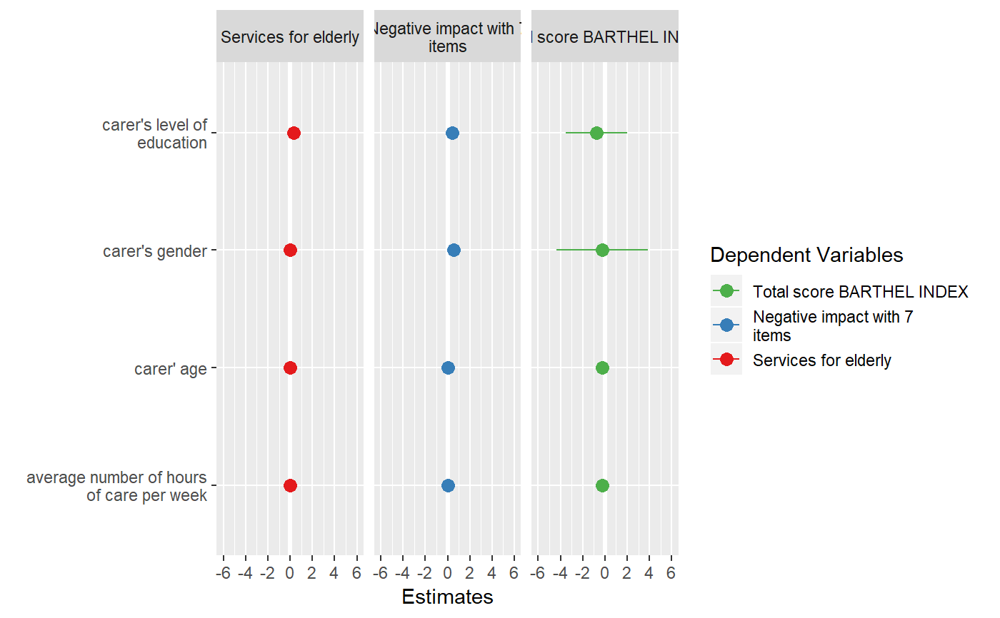
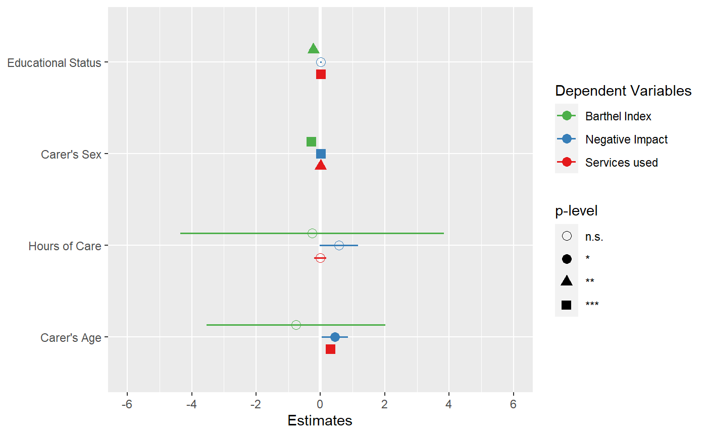
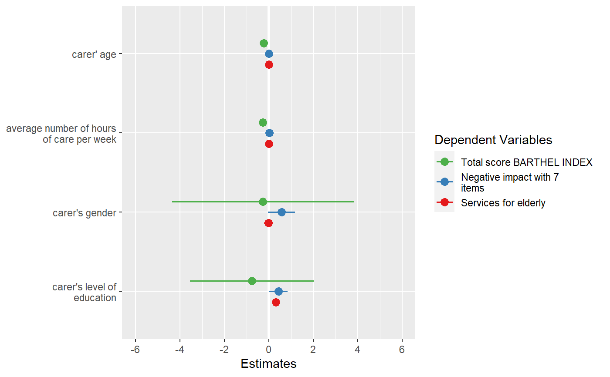
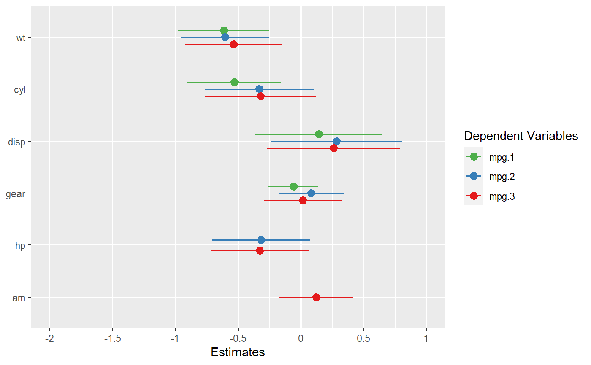

plot_models.RdPlot and compare regression coefficients with confidence intervals of multiple regression models in one plot.
plot_models( ..., transform, std.est = NULL, rm.terms = NULL, title = NULL, m.labels = NULL, legend.title = "Dependent Variables", legend.pval.title = "p-level", axis.labels = NULL, axis.title = NULL, axis.lim = NULL, wrap.title = 50, wrap.labels = 25, wrap.legend.title = 20, grid.breaks = NULL, dot.size = 3, spacing = 0.4, colors = "Set1", show.values = FALSE, show.legend = TRUE, show.intercept = FALSE, show.p = TRUE, p.shape = FALSE, p.threshold = c(0.05, 0.01, 0.001), ci.lvl = 0.95, robust = FALSE, vcov.fun = NULL, vcov.type = c("HC3", "const", "HC", "HC0", "HC1", "HC2", "HC4", "HC4m", "HC5"), vcov.args = NULL, vline.color = NULL, digits = 2, grid = FALSE, auto.label = TRUE, prefix.labels = c("none", "varname", "label") )
| ... | One or more regression models, including glm's or mixed models.
May also be a |
|---|---|
| transform | A character vector, naming a function that will be applied
on estimates and confidence intervals. By default, |
| std.est | Choose whether standardized coefficients should be used
for plotting. Default is no standardization ( |
| rm.terms | Character vector with names that indicate which terms should
be removed from the plot. Counterpart to |
| title | Character vector, used as plot title. By default,
|
| m.labels | Character vector, used to indicate the different models in the plot's legend. If not specified, the labels of the dependent variables for each model are used. |
| legend.title | Character vector, used as legend title for plots that have a legend. |
| legend.pval.title | Character vector, used as title of the plot legend that
indicates the p-values. Default is |
| axis.labels | Character vector with labels for the model terms, used as
axis labels. By default, |
| axis.title | Character vector of length one or two (depending on the
plot function and type), used as title(s) for the x and y axis. If not
specified, a default labelling is chosen. Note: Some plot types
may not support this argument sufficiently. In such cases, use the returned
ggplot-object and add axis titles manually with
|
| axis.lim | Numeric vector of length 2, defining the range of the plot
axis. Depending on plot-type, may effect either x- or y-axis. For
Marginal Effects plots, |
| wrap.title | Numeric, determines how many chars of the plot title are displayed in one line and when a line break is inserted. |
| wrap.labels | Numeric, determines how many chars of the value, variable or axis labels are displayed in one line and when a line break is inserted. |
| wrap.legend.title | numeric, determines how many chars of the legend's title are displayed in one line and when a line break is inserted. |
| grid.breaks | Numeric value or vector; if |
| dot.size | Numeric, size of the dots that indicate the point estimates. |
| spacing | Numeric, spacing between the dots and error bars of the plotted fitted models. Default is 0.3. |
| colors | May be a character vector of color values in hex-format, valid
color value names (see
|
| show.values | Logical, whether values should be plotted or not. |
| show.legend | For Marginal Effects plots, shows or hides the legend. |
| show.intercept | Logical, if |
| show.p | Logical, adds asterisks that indicate the significance level of estimates to the value labels. |
| p.shape | Logical, if |
| p.threshold | Numeric vector of length 3, indicating the treshold for
annotating p-values with asterisks. Only applies if
|
| ci.lvl | Numeric, the level of the confidence intervals (error bars).
Use |
| robust | Logical, shortcut for arguments |
| vcov.fun | Character vector, indicating the name of the |
| vcov.type | Character vector, specifying the estimation type for the
robust covariance matrix estimation (see |
| vcov.args | List of named vectors, used as additional arguments that
are passed down to |
| vline.color | Color of the vertical "zero effect" line. Default color is inherited from the current theme. |
| digits | Numeric, amount of digits after decimal point when rounding estimates or values. |
| grid | Logical, if |
| auto.label | Logical, if |
| prefix.labels | Indicates whether the value labels of categorical variables
should be prefixed, e.g. with the variable name or variable label. See
argument |
A ggplot-object.
data(efc) # fit three models fit1 <- lm(barthtot ~ c160age + c12hour + c161sex + c172code, data = efc) fit2 <- lm(neg_c_7 ~ c160age + c12hour + c161sex + c172code, data = efc) fit3 <- lm(tot_sc_e ~ c160age + c12hour + c161sex + c172code, data = efc) # plot multiple models plot_models(fit1, fit2, fit3, grid = TRUE)# plot multiple models with legend labels and # point shapes instead of value labels plot_models( fit1, fit2, fit3, axis.labels = c( "Carer's Age", "Hours of Care", "Carer's Sex", "Educational Status" ), m.labels = c("Barthel Index", "Negative Impact", "Services used"), show.values = FALSE, show.p = FALSE, p.shape = TRUE )# plot multiple models from nested lists argument all.models <- list() all.models[[1]] <- fit1 all.models[[2]] <- fit2 all.models[[3]] <- fit3 plot_models(all.models)# plot multiple models with different predictors (stepwise inclusion), # standardized estimates fit1 <- lm(mpg ~ wt + cyl + disp + gear, data = mtcars) fit2 <- update(fit1, . ~ . + hp) fit3 <- update(fit2, . ~ . + am) plot_models(fit1, fit2, fit3, std.est = "std2")